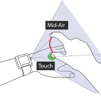
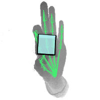
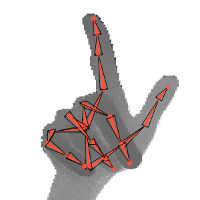
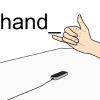
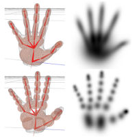
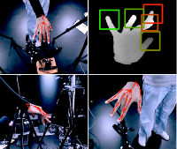
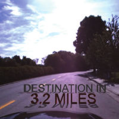
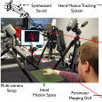
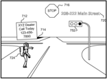

Srinath Sridhar
ssrinath@cs.stanford.eduS297 James H. Clark Center, 318 Campus Drive, Stanford, CA 94305
 I am a postdoctoral researcher in the Geometric Computing Group headed by Prof. Leonidas Guibas at the Computer Science Department at Stanford University. My research interests are in computer vision, human–computer interaction, and computer graphics.
I am a postdoctoral researcher in the Geometric Computing Group headed by Prof. Leonidas Guibas at the Computer Science Department at Stanford University. My research interests are in computer vision, human–computer interaction, and computer graphics.In 2016, I obtained my PhD at the Max Planck Institute for Informatics where I was advised by Christian Theobalt and Antti Oulasvirta. Before that, I completed a masters degree in EECS at the University of Michigan, Ann Arbor and a bachelors degree at the College of Engineering Guindy, Anna University.
I have interned twice at Microsoft Research Redmond where I worked with Shahram Izadi. I was also an intern at the Honda Research Institute working with Victor Ng-Thow-Hing.
News
 I am presenting our work on on- and above-skin input at CHI. Checkout the project webpage for more details.
I am presenting our work on on- and above-skin input at CHI. Checkout the project webpage for more details.- Paper on 3D body pose estimation from a single RGB camera accepted to SIGGRAPH 2017. See the VNect page for details.
I develop computer vision algorithms for markerless human/object tracking and use them to create novel human–computer input methods for desktop, wearable, and virtual/augmented reality devices. My work has been published at the top computer vision, HCI, and computer graphics conferences (e.g., CVPR, ICCV, ECCV, CHI, SIGGRAPH).
Google Scholar / Semantic Scholar
 VNect: Real-time 3D Human Pose Estimation with a Single RGB Camera
VNect: Real-time 3D Human Pose Estimation with a Single RGB Camera
Dushyant Mehta, Srinath Sridhar, Oleksandr Sotnychenko, Helge Rhodin, Mohammad Shafiei, Hans-Peter Seidel, Weipeng Xu, Dan Casas, Christian Theobalt. ACM Transactions on Graphics (SIGGRAPH) 2017.
PDF / Project Page
 FullHand: Markerless Skeleton-based Tracking for Free-Hand Interaction
FullHand: Markerless Skeleton-based Tracking for Free-Hand Interaction
Srinath Sridhar, Gilles Bailly, Elias Heydrich, Antti Oulasvirta, Christian Theobalt
MPI-I-2016-4-002. Saarbrücken: Max-Planck-Institut für Informatik 2016.
PDF / Pubman
 Fast Tracking of Hand and Finger Articulations Using a Single Depth Camera
Fast Tracking of Hand and Finger Articulations Using a Single Depth Camera
Srinath Sridhar, Antti Oulasvirta, Christian Theobalt
MPI-I-2014-4-002. Saarbrücken: Max-Planck-Institut für Informatik 2014.
PDF / Pubman
Google Scholar / Semantic Scholar
Publications
2017
VNect: Real-time 3D Human Pose Estimation with a Single RGB CameraDushyant Mehta, Srinath Sridhar, Oleksandr Sotnychenko, Helge Rhodin, Mohammad Shafiei, Hans-Peter Seidel, Weipeng Xu, Dan Casas, Christian Theobalt. ACM Transactions on Graphics (SIGGRAPH) 2017.
PDF / Project Page

WatchSense: On- and Above-Skin Input Sensing through a Wearable Depth Sensor
Srinath Sridhar, Anders Markussen, Antti Oulasvirta, Christian Theobalt, Sebastian Boring
SIGCHI Conference on Human Factors in Computing Systems (CHI) 2017.
PDF / Project Page
2016
Srinath Sridhar, Anders Markussen, Antti Oulasvirta, Christian Theobalt, Sebastian Boring
SIGCHI Conference on Human Factors in Computing Systems (CHI) 2017.
PDF / Project Page
Tracking Hands in Action for Gesture-based Computer Input
Srinath Sridhar
Ph.D. Dissertation, Saarland University, 2016.
PDF
Srinath Sridhar
Ph.D. Dissertation, Saarland University, 2016.

Real-time Joint Tracking of a Hand Manipulating an Object from RGB-D Input
Srinath Sridhar, Franziska Mueller, Michael Zollhöfer, Dan Casas, Antti Oulasvirta, Christian Theobalt
European Conference on Computer Vision (ECCV) 2016.
PDF / Project Page / BibTeX
2015
Srinath Sridhar, Franziska Mueller, Michael Zollhöfer, Dan Casas, Antti Oulasvirta, Christian Theobalt
European Conference on Computer Vision (ECCV) 2016.
PDF / Project Page / BibTeX

Fast and Robust Hand Tracking Using Detection-Guided Optimization
Srinath Sridhar, Franziska Mueller, Antti Oulasvirta, Christian Theobalt
Computer Vision and Pattern Recognition (CVPR) 2015.
PDF / Project Page / BibTeX
Srinath Sridhar, Franziska Mueller, Antti Oulasvirta, Christian Theobalt
Computer Vision and Pattern Recognition (CVPR) 2015.
PDF / Project Page / BibTeX

Investigating the Dexterity of Multi-Finger Input for Mid-Air Text Entry
Srinath Sridhar, Anna Maria Feit, Christian Theobalt, Antti Oulasvirta
SIGCHI Conference on Human Factors in Computing Systems (CHI) 2015.
PDF / Project Page
2014
Srinath Sridhar, Anna Maria Feit, Christian Theobalt, Antti Oulasvirta
SIGCHI Conference on Human Factors in Computing Systems (CHI) 2015.
PDF / Project Page

Real-time Hand Tracking Using a Sum of Anisotropic Gaussians Model
Srinath Sridhar, Helge Rhodin, Hans-Peter Seidel, Antti Oulasvirta, Christian Theobalt
International Conference on 3D Vision (3DV) 2014. (oral)
PDF / Project Page / BibTeX
2013
Srinath Sridhar, Helge Rhodin, Hans-Peter Seidel, Antti Oulasvirta, Christian Theobalt
International Conference on 3D Vision (3DV) 2014. (oral)
PDF / Project Page / BibTeX

Interactive Markerless Articulated Hand Motion Tracking using RGB and Depth Data
Srinath Sridhar, Antti Oulasvirta, Christian Theobalt
International Conference on Computer Vision (ICCV) 2013.
PDF / Project Page / BibTeX
Srinath Sridhar, Antti Oulasvirta, Christian Theobalt
International Conference on Computer Vision (ICCV) 2013.
PDF / Project Page / BibTeX

User-Centered Perspectives for Automotive Augmented Reality
Victor Ng-Thow-Hing, Karlin Bark, Lee Beckwith, Cuong Tran, Rishabh Bhandari, Srinath Sridhar
International Symposium on on Mixed and Augmented Reality (ISMAR) 2013.
PDF / IEEE Xplore / BibTeX
Victor Ng-Thow-Hing, Karlin Bark, Lee Beckwith, Cuong Tran, Rishabh Bhandari, Srinath Sridhar
International Symposium on on Mixed and Augmented Reality (ISMAR) 2013.
PDF / IEEE Xplore / BibTeX
Posters

HandSonor: A Customizable Vision-based Control Interface for Musical Expression
Srinath Sridhar
Extended Abstracts, SIGCHI Conference on Human Factors in Computing Systems (CHI) 2013.
PDF / Project Page / BibTeX
Srinath Sridhar
Extended Abstracts, SIGCHI Conference on Human Factors in Computing Systems (CHI) 2013.
PDF / Project Page / BibTeX
Generation of Virtual Display Surfaces for In-vehicle Contextual Augmented Reality
Srinath Sridhar, Victor Ng-Thow-Hing
International Symposium on on Mixed and Augmented Reality (ISMAR) 2012.
PDF / BibTeX
Srinath Sridhar, Victor Ng-Thow-Hing
International Symposium on on Mixed and Augmented Reality (ISMAR) 2012.
PDF / BibTeX
Patents

Method to Generate Virtual Display Surfaces from Video Imagery of Road based Scenery
Victor Ng-Thow-Hing, Srinath Sridhar
U.S. Patent, US 9135754 B2, 2015.
Google Patents
Victor Ng-Thow-Hing, Srinath Sridhar
U.S. Patent, US 9135754 B2, 2015.
Google Patents
Technical Reports
FullHand: Markerless Skeleton-based Tracking for Free-Hand InteractionSrinath Sridhar, Gilles Bailly, Elias Heydrich, Antti Oulasvirta, Christian Theobalt
MPI-I-2016-4-002. Saarbrücken: Max-Planck-Institut für Informatik 2016.
PDF / Pubman
Fast Tracking of Hand and Finger Articulations Using a Single Depth CameraSrinath Sridhar, Antti Oulasvirta, Christian Theobalt
MPI-I-2014-4-002. Saarbrücken: Max-Planck-Institut für Informatik 2014.
PDF / Pubman
CAMFPLAN: A Real-time Markerless Camera Pose Estimation System for Augmented Reality
Srinath Sridhar, Vineet R. Kamat
UMCEE Report No. 11-01, Department of Civil and Environmental Engineering, University of Michigan, Ann Arbor 2012.
PDF
Srinath Sridhar, Vineet R. Kamat
UMCEE Report No. 11-01, Department of Civil and Environmental Engineering, University of Michigan, Ann Arbor 2012.
Education
- 2012–2016:
Ph.D. Computer Science, Max Planck Institute for Informatics and Saarland University, Germany
Advisors: Prof. Christian Theobalt, Prof. Antti Oulasvirta
Thesis Committee: Prof. Bernt Schiele, Prof. Hao Li, Prof. Hans-Peter Seidel (Chair)
Thesis: Tracking Hands in Action for Gesture-based Computer Input
- 2010–2012:
Master of Science in Engineering, Electrical Engineering: Systems, University of Michigan, Ann Arbor, USA
Major: Computer Vision, Minor: Computer Science
Courses: Computer Vision, Machine Learning, Artificial Intelligence, Computer Graphics - 2006–2010:
Bachelor of Engineering, Geoinformatics, College of Engineering Guindy, Anna University, Chennai, India
Thesis: "Multiple View Reconstruction & Documentation of Architectural Scenes"
Courses: Photogrammetry, Digital Image Processing, Remote Sensing, OOP, DBMS
Talks & Tutorials
- Tracking Hands in Action for Gesture-based Computer Input, Stanford University and University of Southern California, USA, October 2016.
- Capturing Hands in Action for Gesture-based Computer Input, Facebook, Seattle, USA, July 2016.
- Investigating the Dexterity of Multi-Finger Input for Mid-Air Text Entry, CHI, Seoul, South Korea, April 2015.
- Towards Multi-Objective Optimization for UI Design, CHI Optimization Workshop, Seoul, South Korea, April 2015.
- Real-time Hand Tracking Using a Sum of Anisotropic Gaussians Model, 3DV, Tokyo, Japan, Dec 2014.
- Tutorial on 3D Interaction using Hand Motion Tracking, EIT ICT Labs Smart Spaces Summer School, Grenoble, France, June 2013.
Service
Reviewer for BMVC (2017), TPAMI (2017), CHI (2014–2017), UIST (2016), IMWUT/Ubicomp (2017), SIGGRAPH Asia (2017), Eurographics (2017), CVIU (2015), 3DV (2015), FG (2017), IROS (2014–2016), Computer (2016).